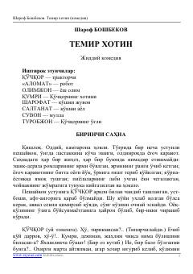

TXSharof Boshbekovning mashhur hajviy pyesasi va oilaviy munosabatlar haqidagi asari.
Sharof Boshbekovning ushbu mashhur hajviy pyesasi oilaviy munosabatlar, jamiyotdagi illatlar va insoniy xarakterlarni o'tkir satira ostida ochib beradi. Asarda bosh qahramon Qo'chqor va uning oilasi hayotidagi qiziqarli voqealar hamda o'zgarishlar tasvirlanadi. Pyesa o'zbek dramaturgiyasining durdona asarlaridan biri hisoblanadi.